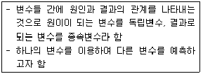
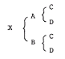
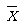
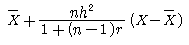

축산기사 (2008-09-07 기출문제)
1과목: 가축육종학
1. 다음 설명하는 통계분석의 용어는?

- 상관
- 분산
- 회귀
- 평균
(정답률: 38%)

2. 유전자의 본질인 DNA는 염기와 당, 그리고 인산으로 이루어진 뉴클레오티드 들의 중합체이다. 뉴클레오티드에 대한 다음의 설명 중 맞는 것은?
- 큰 염기인 푸린(purine) 염기와 작은 염기인 피리미딘(pyrimidine) 염기 사이에 수소 결합을 함으로써 DNA이중 가닥의 폭은 항상 일정하다.
- DNA의 염기에는 아데닌(adenine), 구아닌(guanine), 시토신(cytosine), 우라실(uracil), 그리고 티민(thymine)이 있다.
- DNA에서 나타나는 당은 오탄당인 리보오스(ribose) 이다.
- 푸린(purine) 염기인 아데닌(adenine)과 구아닌(guanine)의 수와 피리미딘(pyrimidine)수는 동물과 동물체 내의 기관에 따라 다를 수 있다.
(정답률: 45%)
3. 젖소의 후대 검정용 후보 종모우를 생산하기 위한 종빈우의 자격 요건에 포함되는 것은?
- 외모 심사 점수가 90점 이나 등록 기관에 혈통 등록이 안된 것
- 외모 심사 점수가 70점이고, 만성 질환이 없는 것
- 유량에 대한 유전능력이 상위4%이고, 평균 유지율이 4%인 것
- 초산차 이상으로 정상적인 번식기록은 없으나 외모심사 점수가 75점인 것
(정답률: 64%)
4. A, B가 X의 부모인 다음의 그림과 같은 가계도에서 X의 근교계수는?(오류 신고가 접수된 문제입니다. 반드시 정답과 해설을 확인하시기 바랍니다.)

- 0.125
- 0.250
- 0.500
- 0.750
(정답률: 20%)
5. 육우의 보증 종모우 선발체계의 설명으로 틀린 것은?
- 당대 검정에서는 산육형질이 주요 선발대상 형질이다.
- 육질을 고려할 경우 후대검정 후에 선발한다.
- 부모의 능력만 고려한 선발이 후대검정보다 훨씬 선발의 정확도가 높다.
- 사료 효율도 주요 선발 대상 형질이 될 수 있다.
(정답률: 77%)
6. 다음 공식은 무엇을 추정하는데 쓰이는 것인가? (단, X: 개체기록의 평균치, n :기록의 수, h2: 유전력, r:반복력,

=X의 축군 평균)
- 육종가
- 선발차
- 유전상관
- 유전적 개량량
(정답률: 52%)
7. 소의 무각이 유각에 대하여 우성이다. 그렇다면 무각(PP)인 소와 유각(pp)인 소를 교배하였을 경우 F1의 표현형과 유전자형을 올바르게 표시한 것은?
- 무각(PP)
- 무각(Pp)
- 유각(Pp)
- 유각(pp)
(정답률: 80%)
8. 한우 선발육종시 생시체중에 역점을 두는 경우 예상되는 위험성은?
- 난산(難産)의 우려
- 과적(過積)의 우려
- 왜소의 우려
- 장기재태(長期在胎)의 우려
(정답률: 53%)
9. 선발 지수를 산출하는 데 필요한 자료가 아닌 것은?
- 육종가
- 유전력
- 상대적 경제가치
- 유전 상관 계수
(정답률: 41%)
10. 대규모 양돈장에서 가장 널리 이용되고 있는 돼지의 교배 방법은?
- 1대잡종(품종간교배)
- 상호역교배
- 3품종종료교배
- 4품종윤환교배
(정답률: 83%)
11. 젖소의 유지생산량에 있어 A계통의 일반조합능력이 +10kg, B계통의 일반조합능력이 +20Kg이고, 이 두계통간의 교배에 의한 자손의 평균능력이 +15kg 이라면 두 계통간의 특정조합능력은?
- -15kg
- 0kg
- 10kg
- 15kg
(정답률: 64%)
12. 표현형을 크게 나누면 유전적 요인과 환경적 요인으로 구분되는데 유전적 요인의 세부적인 효과가 아닌 것은?
- 상가적 효과
- 우성 효과
- 상위성 효과
- 공통 효과
(정답률: 80%)
13. 비대립 유전자간의 상호작용에 의한 효과와 가장 관련성이 높은 것은?
- 상가적 효과
- 우성 효과
- 상위성 효과
- 환경 효과
(정답률: 49%)
14. 채란 양계에서 산란계의 선발요건에 관한 설명 중 틀린것은?
- 산란계의 폐사율이 낮음으로써 폐사로 인하여 생기는 손실을 막을 수 있을 뿐만 아니라 이로 인하여 보충시킬 갱신비용이 적게 든다.
- 일반적으로 닭의 몸집이 클 수록 알도 잘 낳고 건강하며 굵은 알을 낳는다.
- 난중은 그 닭의 유전적인 소질로서 계통선발에 있어서는 조숙성이며, 초산 후 2~3개월만에 표준난중에 도달하는 닭을 선택해야 한다.
- 난질은 닭의 유전적 소질과 사양관리∙질병∙환경∙기후∙ 관계 등에 따라 좌우되지만 보통은 그 계통의 유전적 능력에 의하여 차이가 생긴다.
(정답률: 79%)
15. 개체선발에 관한 설명 중 틀린것은?
- 개체의 능력만을 기준으로 하여 그 개체를 종축으로 선발하는 방법이다.
- 가계나 선조 또는 자손의 능력에만 근거를 두고 개체의 표현형은 전혀 무시하여, 그 개체의 육종가를 추정한다.
- 유전력이 높은 형질의 개량에 효과적으로 이용될 수 있다.
- 도체(屠體)에서 측정되는 형질과 같이 개체를 도살해야만 측정할 수 있는 형질에 대해서는 선발할 수 없다.
(정답률: 73%)
16. 다음 중 젖소의 개량목표와 가장 관계가 적은것은?
- 번식 효율의 향상
- 두당 우유 생산량의 증가
- 유방염에 대한 항병성의 증진
- 도체의 품질 개선
(정답률: 77%)
17. 생물에 대한 인위적인 돌연변이 유발원 물질들은 비교적 많은 편이다. 실용성이 가장 떨어지는 물질은?
- 자외선
- 초음파
- proton
- colchicine
(정답률: 63%)
18. 다음 중 억제유전자(suppressor)에 의하여 나타나는 것은?
- Wyandotte종 닭의 백색우모
- Leghorn종 닭의 백색우모
- Duroc종 돼지의 적색모색
- Berkshire종 돼지의 흑색모색
(정답률: 66%)
19. 유우애소 비유량의 유전력 추정치로 가장 적합한 범위는?
- 0.01~0.03%
- 0.20~0.30%
- 0.50~0.60%
- 0.80~0.90%
(정답률: 63%)
20. 다음 중 어떤 개체의 유전자형을 알기 위하여 열성의 호모개체를 교잡하는 검정교배를 나타낸 것은?
- BB*BB
- BB*Bb
- Bb*Bb
- Bb*bb
(정답률: 81%)
2과목: 가축번식생리학
21. 다음 중 과배란처리 된 공란우에서 수정란이식에 가장 적합한 수정란의 채란 시기는?
- 수정 후 1~2일
- 수정 후 3~4일
- 수정 후 5~7일
- 수정 후 8~11일
(정답률: 57%)
22. 방목하고 있는 암소가 발정이 왔는지 알 수 있는 실제적인 방법은?
- 질구검사법
- 친볼마커
- 보수계 부착
- 스테로이드호르몬 측정
(정답률: 67%)
23. 처음으로 소 정액의 동결보존에 성공한 사람은?
- Polge와 Rowson
- Nagase
- Lardy와 Phillips
- Lvanoff
(정답률: 55%)
24. 소의 경우 교배(인공수정) 후 정자와 난자가 난관팽대부에서 만나 수정을 완료하는데 소요되는 시간은?
- 10~12 시간
- 17~18 시간
- 20~24 시간
- 30시간
(정답률: 48%)
25. 다음 중 요도구선이 가장 잘 발달된 가축은?
- 소
- 말
- 면양
- 돼지
(정답률: 68%)
26. 젖소에 있어서 난포낭종이 발생하는 가장 대표적인 원인은?
- 난포자극호르몬(FSH)의 분비부족
- 황체형성호르몬(LH)의 분비과잉
- 황체형성호르몬(LH)의 분비부족
- 부신피질자극호르몬(ACTH)의 분비부족
(정답률: 57%)
27. 소의 난자가 배란되는 단계는?
- 난조세포
- 난모세포
- 제1극체 방출후
- 제2극체 방출후
(정답률: 62%)
28. 소에서 비외과적 수정란 이식시 수정란의 이식 부위로서 어느곳이 가장 적당한가?
- 자궁각 선단
- 자궁체내
- 자궁경내
- 질심부
(정답률: 69%)
29. 암컷의 생식기관이 발생되는 과정에서 난소의 발생과 가장 관계가 깊은것은?
- 중신
- 생식선 융기
- 생식 결절
- 생식 추벽
(정답률: 69%)
30. 젖소에서 유방 지지계의 정중제인대에 관한 설명 중 옳은 것은?
- 유방의 외측면에 퍼져 있다.
- 유방의 부착을 견고하게 한다.
- 유방을 좌우로 흔들리지 않게 한다.
- 탄력성이 적다.
(정답률: 62%)
31. 유선의 발육에 관한 설명 중 옳은 것은?
- Progesterone은 유선관계의 발육을 억제한다.
- Estrogen은 유선관계의 발육을 억제한다.
- 성성숙과 유선의 발육과는 생리적으로 별개의 문제이다.
- 성성숙에 따라 발정의 반복은 유선관계를 크게 발달시킨다.
(정답률: 58%)
32. 포유 가축에 주로 발생되는 브루셀라병에 대해서 올바르게 설명한 것은?
- 급성 또는 만성전염병으로 유산을 일으킨다.
- 급성 또는 만성전염병으로 분만시 후산 정체를 일으킨다.
- 고질적인 생식기의 유전병으로 유산을 일으킨다.
- 만성적인 생식기의 유전병으로 분만시 후산정체를 일으킨다.
(정답률: 71%)
33. 소에 있어서 잡종교배를 하였을 때 그 새끼의 성성숙 도달일령은 어떻게 변하는가?
- 번식계절과 온도에 따라 크게 변화한다.
- 순종과 큰 차이가 없다.
- 순종에 비하여 늦다
- 순종에 비하여 빠르다.
(정답률: 68%)
34. 포유가축에서 발정의 동기화, 분만시기의 인위적 조절 및 번식장해의 치료에 광범위하게 사용되는 호르몬은?
- 프로스타그란딘
- 황체형성호르몬
- 임마혈청성성선자극호르몬
- 성장호르몬방출호르몬
(정답률: 62%)
35. 가축에게 프로스타글란딘을 투여했을 때 가장 현저하게 감소하는 혈중 호르몬은?
- 프로게스테론
- 에스트로겐
- 테스토스테론
- 바소프레신
(정답률: 73%)
36. 가축의 분만단계에 해당되지 않는 것은?
- 준비기
- 태아의 만출
- 후산만출
- 자궁퇴축
(정답률: 63%)
37. 태반 융모막융모의 형태적인 분류 중 돼지에 해당되는 것은?
- 산재성태반
- 궁부성태반
- 대상태반
- 반상태반
(정답률: 74%)
38. 소의 외부적 발정징후로 옳지 않은 것은?
- 수소의 승가를 허용한다.
- 불안해하고 자주 큰소리로 운다.
- 식욕이 왕성해지고 온순하여진다.
- 외음부는 충혈되어 붓고 밖으로 맑은 점액이 흘러 나온다.
(정답률: 83%)
39. 비유의 개시와 관계 깊은 호르몬은?
- 바소프레신(vasopressin)
- 프로락틴(prolactin)
- 에스트로겐(estrogen)
- 난포자극호르몬(FSH)
(정답률: 78%)
40. 출생시 대부분 포유류의 난소에 존재하는 생식세포의 형태는?
- 난모세포
- 난조세포
- 난자세포
- 난낭세포
(정답률: 65%)
3과목: 가축사양학
41. 일반적으로 휴산과 환우하는 닭이 많이 발생하며, 질병의 발생 우려가 있는 시기는?
- 봄(3~5월)
- 여름(6~8월)
- 가을(9~11월)
- 겨울(12월~2월)
(정답률: 49%)
42. 혈액응고에 필요한 물질이 아닌것은??
- Ca2+
- vitamin K
- prothrombin
- oxalic acid
(정답률: 69%)
43. 단백질이 48% 들어있는 대두박과 단백질이 8% 들어있는 옥수수를 가지고 단백질이 20%되는 사료를 만들려면 각각 배합비율은 얼마나 되는가? (단, 방형법을 사용한다.)
- 옥수수 80% - 대두박 20%
- 옥수수 55% - 대두박 45%
- 옥수수 65% - 대두박 35%
- 옥수수 70% - 대두박 30%
(정답률: 60%)
44. 다음 호르몬 중 혈당을 증가시키는 것은?
- insulin
- glucagon
- calcitonin
- estrogen
(정답률: 66%)
45. 젖소의 대사성 질병에 해당되지 않는 것은?
- 기종저
- 유열
- 케토시스
- 고창증
(정답률: 70%)
46. 식물성 사료에 결핍되어 있는 비타민으로 모든 동물의 대사작용을 위해 꼭 필요하며, 병아리의 성장과 부화에 필수적인 영양소이고, APF와 동일 물질인 것은?
- 비타민 B1
- 비타민 B2
- 비타민 B6
- 비타민 B12
(정답률: 51%)
47. 단백질의 생물가(BV:Biological Value)를 구하는 공식으로 옳은것은?
- (체내 축적된 질소/흡수한 질소) * 100
- (흡수한 질소/체내 축적된 질소) * 100
- ((흡수한 질소-똥의 질소)/흡수한 질소) * 100
- ((섭취한 질소-똥의 질소)/섭취한 질소 * 100
(정답률: 48%)
48. 다음 중 음식물의 소화를 위해 위산과 펩신(pepsin) 등의 소화액을 분비하는 닭의 기관은?
- 식도(esophagus)
- 소낭(crop)
- 선위(proventriculus)
- 근위(gizzard)
(정답률: 85%)
49. 가축이 카로틴(Carotene)을 섭취하면 체내에서 어떤 물질로 전환 되는가?
- 비타민 A
- 비타민 B
- 비타민 C
- 비타민 K
(정답률: 69%)
50. 다음 아미노산 중 순수하고 완전한 ketogenic 아미노산은?
- serine
- glycine
- alanine
- leucine
(정답률: 48%)
51. 다음 중 DM, DCP, TDN, Ca, P, Carotene, NE 등으로 제정하고 Wolff-Lehmann의 사양표준을 개정하여 만든 사양표준은?
- Amsby 사양표준
- Morrison 사양표준
- Hansson 사양표준
- NRC 사양표준
(정답률: 51%)
52. 비육시 영양소요구량을 결정할 때 고려하지 않아도 되는것은?
- 증체량(增體量)
- 산유량(産油量)
- 사료 사정(事情)
- 생체중(生體重)
(정답률: 61%)
53. 한우 거세의 효과 중 옳은 것은?
- 일당증체량이 증가한다.
- 출하체중 도달일수가 단축된다.
- 사료효율이 높다.
- 비거세우에 비해 정육율이 낮다.
(정답률: 70%)
54. 다음 중 리신(lysine)이 제한아미노산인 사료들로만 묶인 것은?
- 대두박, 보리, 수수
- 옥수수, 육골분, 대두박
- 어분, 육골분, 밀
- 옥수수, 임자박, 밀
(정답률: 45%)
55. SPF 돼지란 무엇을 의미하는가?
- 모든 병원균에 감염이 안된 돼지
- 모든 병원균이 감염된 돼지
- 특수 병원균이 감염된 돼지
- 특수 병원균에 감염이 안된 돼지
(정답률: 33%)
56. 반추위 발효조정제란 반추동물의 제 1위내 발효산물을 유효하게 변화시켜 사료효율을 개선하게 하는 사료첨가제를 말한다. 1976년 미국 FDA로부터 반추위발효조정제로 최초로 승인받은 이 물질은?
- bacitracin
- monensin
- lincimycin
- zingkomin
(정답률: 43%)
57. 요소(urea)를 이용하기 부적합한 가축은?
- 젖소
- 고깃소
- 산양
- 돼지
(정답률: 68%)
58. 지방이 소장벽에서 흡수되는 주 형태는?
- gylcerol
- triglyceride
- lincomycin
- zingkomin
(정답률: 28%)
59. 가소화양분총량(TDN)과 관계가 없는 것은?
- 단백질
- 지방
- 조섬유
- 조회분
(정답률: 71%)
60. 번식돈의 강정사양(flushing)에 관한 설명 중 잘못된 것은?
- 일반적으로 교배 직전 1~2주의 경산돈에 대하여 실시한다.
- 특히 고에너지 사료를 급여하는 방법이다.
- 강정사양을 하게 되면 교배시 배란수가 많아져서 산자수를 증가하는 효과가 있다.
- 발육이 지체된 돼지에 대하여 실시할 때 특히 효과가 크다.
(정답률: 42%)
4과목: 사료작물학 및 초지학
61. 목초 중 하번초에 속하는 것은?
- 켄터키블루글래스
- 오차드그래스
- 티머시
- 톨페스큐
(정답률: 64%)
62. 사일리지 제조의 원리에 관한 설명 중 가장 바르게 설명한 것은?
- 유산균을 증식시켜 다른 불량 균들의 증식을 억제함으로써 저장성이 부여된 다즙질 사료이다.
- 낙산균 및 단백질 분해균에 의해 소화율이 개선된 다즙질 사료이다.
- 수분함량이 높을수록 미생물의 이동이 쉬우므로 pH가 높아도 발효 품질은 양호하다.
- 고온에서 발효시키는 것이 저온에서 발효시키는 것보다 발효속도가 빠르므로 유리하다.
(정답률: 59%)
63. 방목지의 시설은 목장경영에 부담이 되지 않는 범위 내에서 지형 등 자연조건을 효과적으로 활용하여 필 요한 최소 시설을 하는 것이 좋다. 방목 시설 관리에 대한 설명 중 가장 올바른 것은?
- 계획적인 방목과 전목, 위생작업에 필수적인 목책에는 외책, 내책, 유도책, 위험방지책 등이 있다.
- 급수조의 크기는 언제나 전방목가축이 한꺼번에 먹을수 있도록 길게 하여야 한다.
- 과도한 급염은 질병을 일으키므로 방목장 구석에 위치하여 제한적으로 이용할 수 있게 하여야 한다.
- 우리나라 기후 조건에서도 별도의 피난사나 비음사(피난림이나 비음림)를 만들 필요 없다.
(정답률: 57%)
64. 다음 중 내습성이 강하여 다습지역의 재배에 가장 적합한 작물은?
- 알파파
- 버즈풋 트레포일
- 리드 카나리그래스
- 수단그래스
(정답률: 46%)
65. 젖소에 있어 1일 두당 생초급여량은 체중의 몇% 정도가 가장 적당한가?
- 2.5~3%
- 5~10%
- 10~15%
- 15~20%
(정답률: 53%)
66. 2.5ha의 목구에 500kg의 착유우 13마리와 300kg의 약우 5마리가 방목되었다면 방목밀도는?
- 5.4 animal units/ha
- 6.4 animal units/ha
- 7.4 animal units/ha
- 8.4 animal units/ha
(정답률: 56%)
67. 건초보다 사일리지를 이용할 때의 특징으로 옳은 것은?
- 날씨의 영향을 많이 받는다.
- 저장 공간을 많이 차지한다.
- 기계화하기 쉬우므로 노력이 적게 든다.
- 운반과 취급이 쉽다.
(정답률: 28%)
68. 답리작에 적합한 작물의 특징이 아닌 것은?
- 다년생이어야 한다.
- 내습성이 강해야 한다.
- 내한성이 강해야 한다.
- 봄에 생산성이 높아야 한다.
(정답률: 56%)
69. 경운 초지 조성시 석회 시용량을 결정하는데 고려하지 않아도 되는 요인은?
- 토양산도
- 토양 유기물함량
- 토성
- 경사도
(정답률: 57%)
70. 다음 중 목양력과 관련된 설명이 틀린 것은?
- 가축단위 방목일 : 체중500kg, 유생산량 3640L의 젖소가 일일소비하는 방목초량으로 표시한다.
- 이용대사에너지 : 체중의 차이뿐만 아니라 체중 및 유량변화를 고려하여 넣기 때문에 가축단위 방목일 보다 계산상의 융통성을 갖고 있다.
- 방목일(cow day) : 방목지에서 몇 두의 가축이 몇 일 사육 가능한가를 나타내는 것으로 체중 500kg의 성우 1마리를 1일간 방목할 수 있으면 1CD가 된다.
- 방목밀도 : 초량에 관계없이 초지면적당 방목두수(두수/면적)를 말한다.
(정답률: 52%)
71. 다음 중 봄철에 청예로 이용 할 수 있는 작물은?
- 수수
- 호밀
- 수단그래스
- 청예대두
(정답률: 51%)
72. 일반적인 건초 외관상 품질평가에서 중요도(평가 배점)의 크기를 바르게 나열한 것은?
- 촉감 ＞ 수확시기(숙기),잎의 비율 ＞ 향기,녹색도
- 향기,녹색도 ＞ 촉감 ＞ 수확시기(숙기),잎의 비율
- 녹색도 ＞ 수확시기(숙기),잎의 비율 ＞ 촉감
- 수확시기(숙기),잎의 비율 ＞ 향취,녹색도 ＞ 촉감
(정답률: 63%)
73. 예취 후 재생에 쓰여 질 수 있는 양분으로만 짝지어진 것은?
- 과당, 셀로로오스
- 포도당, 리그닌
- 규산, 글루타민
- 전분, 프락토산
(정답률: 30%)
74. 헤이컨디셔너(hay conditioner)는 어떠한 목적으로 사용하는 기계인가?
- 목초를 빨리 마르게 하기 위하여 목초를 으깨는 기계
- 목초를 빨리 마르게 하기 위하여 건초를 뒤집는 기계
- 건조된 목초를 모으는 기계
- 건조된 목초를 압축하여 묶는 기계
(정답률: 59%)
75. 모래 땅 및 내한성에 잘 ruselaum 잎은 우상복엽이고 뿌리에 근류가 달리며 겨울을 지나 꽃피는 것은?
- 헤어리베치
- 라니노클로버
- 메도우페스큐
- 톨페스큐
(정답률: 32%)
76. 양질의 건초를 조제하기 위해서는 건조효율을 높이는 것이 중요하다. 건조효율을 향상시키는 방법이 아닌것은?
- 압쇄(conditioning)
- 반전(tedding)
- K2CO3용액살포
- 곤포(baling)
(정답률: 45%)
77. 이탈리안라이그래스와 페레니얼라이그래스는 같은 속(屬)의 목초이기 때문에 겉모양이 비슷하다. 다음 중 두 초종의 식별에 적합한 특징은?
- 입혀
- 입귀
- 유경
- 꽃색
(정답률: 35%)
78. 사료용 유채를 수확 이용할 때 양분손실량을 최소화 할 수 있는 가장 바람직한 이용방법은?
- 청초급여(풋베기)
- 건초제조
- 사일리지(담근먹이) 제조
- 노지야적 후 이용
(정답률: 60%)
79. 오처드그래스의 특징 설명으로 맞는 것은?
- 엽설이 크다.
- 줄기는 둥근형이다.
- 포복경을 가졌다.
- 잎에는 털이 많이 나 있다.
(정답률: 41%)
80. 초지조성을 위하여 목초를 혼파 할 때 초종 선택에서 유의해야 할 사항 중 가장 거리가 먼 것은?
- 재배하는 지방의 기후풍토에 알맞은 초종
- 화본과작물과 두과작물을 혼파
- 수확 시기가 비슷한 초종 선택
- 가축의 기호성에 차이가 큰 것
(정답률: 72%)
5과목: 축산경영학 및 축산물가공학
81. 어떤 양계경영농가에서 총고정비용이 500,000원, 총유동비용이 300,000원, 평균고정비용이 50,000원, 평균유동비용이 30,000원 투입되었다면 총비용은 얼마인가?
- 800,000원
- 830,000원
- 850,000원
- 880,000원
(정답률: 51%)
82. TPP(총생산), MPP(한계생산), APP(평균생산)의 관계 설명 중 옳은 것은?
- APP가 증가시 APP는 MPP보다 크다.
- TPP가 최고시 MPP는 마이너스이다.
- TPP가 체증적으로 증가할 때 MPP는 감소한다.
- APP는 APP의 최고점을 지난다.
(정답률: 36%)
83. 산란계 농장의 계란 생산비 자료를 보면 사육규모가 커질수록 계란생산비는 감소하는 것을 알 수 있다. 이와 같은 내용이 설명하고 있는 것은?
- 규모의 경제
- 기회비용
- 이윤극대화의원칙
- 계열화
(정답률: 71%)
84. 축산경영은 일반적인 특징과 경제적인 특징으로 분류된다. 다음 중 경제적 특징으로 볼 수 없는 것은?
- 자금회전의 원활화
- 토지의 이용증진
- 노동력의 이용증진
- 경영규모의 영세성
(정답률: 52%)
85. 부분시산(部分試算)법을 이용하여 어느 특정의 변수가 수익에 어떠한 영향을 끼치는가를 파악하려 할 때 검토해야 할 사항이 아닌 것은?
- 감소되는 수입
- 새로운 수입 또는 추가수입
- 생산기술 또는 기술계수
- 새로운 비용과 추가비용
(정답률: 59%)
86. 한우농가가 수도작을 일부 재배할 경우. 한우경영에서 생산된 구비를 수도작에 투입함으로써 비료구입비도 절약되고, 벼 수확량도 늘어났다고 가정하자. 이 때의 두 부문간 관계를 무엇이라고 하는가?
- 경합관계
- 보완관계
- 경쟁관계
- 결합관계
(정답률: 51%)
87. 산란계 A 농가의 조수입이 50,000,000원, 감가상각비가 5,000,000원, 차입금이자가 1,000,000원, 경영비가 25,000,000원, 자가 노력비가 3,000,000원, 자본이자가 7,000,000원 이라고 할 때 이 농가의 순수익은?
- 5,000,000원
- 10,000,000원
- 15,000,000원
- 20,000,000원
(정답률: 33%)
88. 경제적 입지론을 설명한 튜넨(J.H.Von Thu nen)의 저서는?
- 국부론
- 고립국
- 지대론
- 인구론
(정답률: 35%)
89. 낙농경영계획을 수립하기 위한 손익분기점의 기본 계산법은?
- (고정비+이익)/(1-(변동비/매출액))
- (고정비-이익)/(1-(변동비/매출액))
- 변동자본/(1-(고정자본/매출액))
- 고정비/(1-(변동비/매출액))
(정답률: 53%)
90. 비육우 두당 총 수입이 500만원, 경영비가 300만원, 생산비(총비용)가 400만원 이다. 이 농가의 비육우 순수익률은 얼마인가?
- 40%
- 30%
- 20%
- 10%
(정답률: 55%)
91. 어떤 생산물(Y)을 최소비용으로 생산하기 위한 두 생산요소(x1,x2)의 최적 결합조건은? (단, ⊿x1과⊿x2는 추가 투입, Px1 과 Px2는 생산요소 가격이다.)
- Px1ㆍ ⊿x1＞ Px2ㆍ ⊿x2
- Px1ㆍ ⊿x1＜ Px2ㆍ ⊿x2
- Px1ㆍ ⊿x1= Px2ㆍ ⊿x2
- Px1ㆍ ⊿x2= Px2ㆍ ⊿x1
(정답률: 53%)
92. 현재 쇠고기(식육ㆍ포장육 및 식육가공품)를 조리하여 판매ㆍ제공하는 경우 일반 음식점의 원산지 표시제를 적용하는 면적 기준은??
- 100m2
- 300m2
- 500m2
- 취급 업소 모두 해당
(정답률: 50%)
93. 축산경영 운영의 합리화 방안으로 가장 부적당한 것은?
- 소규모 경영
- 근대화 경영
- 과학적 경영
- 경영목표에 합치되는 경영
(정답률: 65%)
94. 번식돈 구입가격이 50만원, 연간 번식회전율이 2.5회, 번식돈의 내용년수가 3년, 번식돈의 잔존가액이 구입가액의 40% 일 때, 정액법으로 감가상각비를 산출할 경우 번식돈의 매년 감가상각비는 얼마인가?
- 10만원
- 12만원
- 14만원
- 16만원
(정답률: 59%)
95. 비육돈 경영에서 수익성 규정요인이 아닌 것은?
- 상시(常侍) 사육두수의 최소화
- 사고 폐사율의 최소화
- 판매돈 1마리당 매상고의 최대화
- 년간 비육 회전율이 제고(提高)
(정답률: 59%)
96. 유통마진을 나타낸 것은?
- 소비자 지불가격 + 생산자 수취가격
- 소비자 지불가격 - 생산자 수취가격
- 생산자 수취가격 - 소비자 지불가격
- 생산자 수취가격 - 판매비용
(정답률: 62%)
97. 계란 생산을 위해 필요한 비용들 중 경영비에 속하지 않는 것은?
- 사료비
- 자가노력비
- 차입금이자
- 진료위생비
(정답률: 37%)
98. 단기에서 생산물가격이 평균비용(AC) 보다는 낮더라도 평균가변비용(AVC) 보다 높다면 생산을 계속하는 것이 유리할 경우가 있다. 이를 무엇이라 하는가?
- 수익 최대화의 원리
- 가격 비용의 원리
- 투입 최적화의 원리
- 손실 최소화의 원리
(정답률: 54%)
99. 농업노동의 특수성에 해당되지 않는 것은?
- 농업노동의 단순성
- 농업노동의 이동성
- 농업노동의 계절성
- 노동감독의 곤란성
(정답률: 34%)
100. 축산경영자가 수익을 최대로 올리기 위한 조건으로 틀린것은?
- 한계수익과 한계비용이 같을 때
- 한계생산이 그 가격의 역비와 같을 때
- 한계가치 생산이 자원의 가격과 같을 때
- 한계수익이 자원의 가격과 같을때
(정답률: 31%)